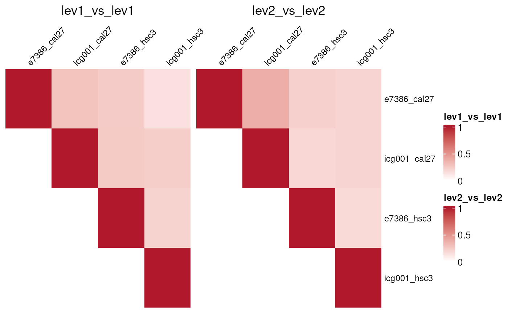
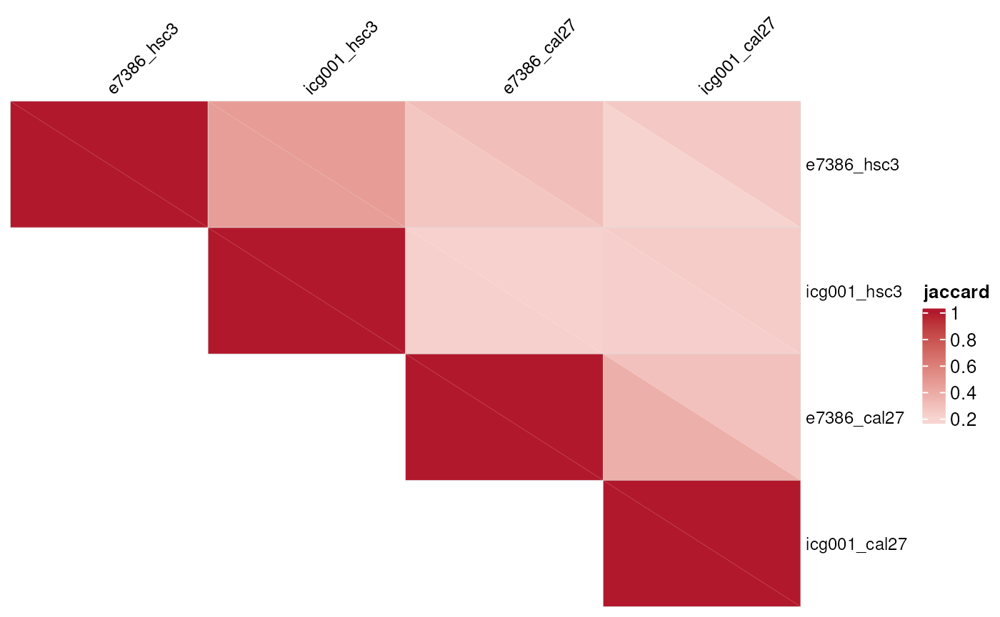
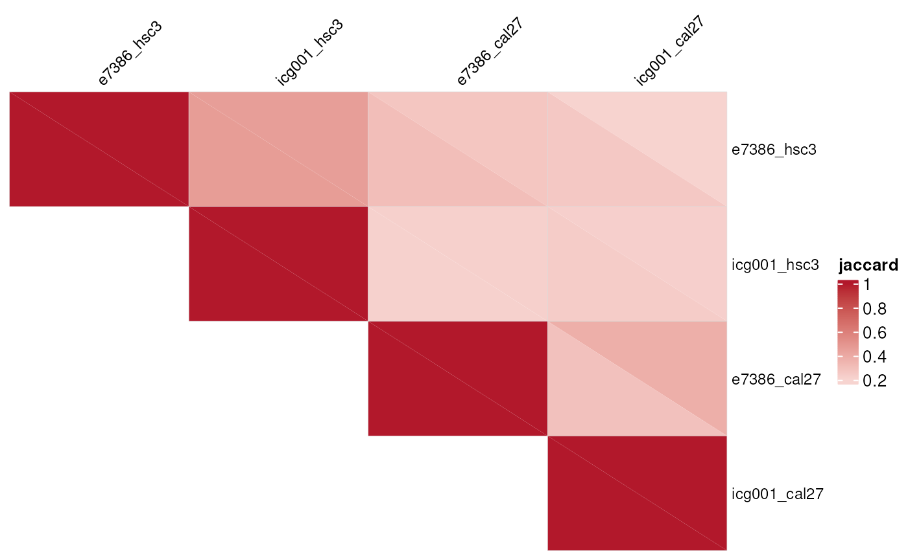
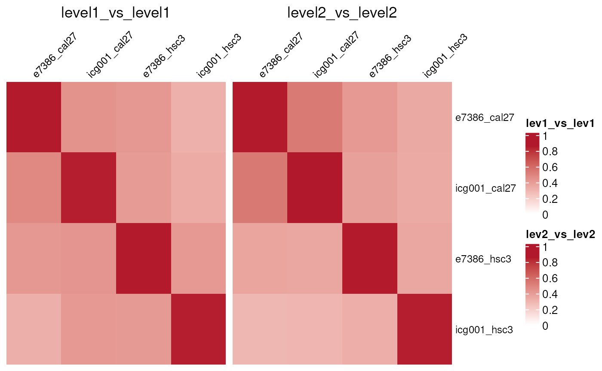

This vignette outlines the workflow for comparing
OmicSignature objects and visualizing similarity among
signatures. It is prepared for later publication with the package
website and uses small illustrative snippets rather than bundled example
signature files.
Compare one list of signatures
Use compare_omic_signatures() with a named list of
OmicSignature objects to compare every signature against
every other signature in the list. For bi-directional signatures, the
function compares the first factor level against the first factor level
and the second factor level against the second factor level.
#library(OmicSignature)
devtools::load_all()
#> ℹ Loading OmicSignature
data(compare_signatures_example)
signature_list <- compare_signatures_example
overlap_res <- compare_omic_signatures(
sig_list1 = signature_list,
method = "overlap",
score_cutoff = log2(1.25),
adj_p_cutoff = 0.05,
min_features = 25,
max_feature = 500
)
names(overlap_res$comparisons)
#> [1] "level1_vs_level1" "level2_vs_level2"
overlap_res$comparisons$level1_vs_level1$jaccard
#> e7386_hsc3 e7386_cal27 icg001_hsc3 icg001_cal27
#> e7386_hsc3 1.000000000 0.23915737 0.01626016 0.007360673
#> e7386_cal27 0.239157373 1.00000000 0.02774923 0.002092050
#> icg001_hsc3 0.016260163 0.02774923 1.00000000 0.198998748
#> icg001_cal27 0.007360673 0.00209205 0.19899875 1.000000000
overlap_res$comparisons$level1_vs_level1$counts
#> e7386_hsc3 e7386_cal27 icg001_hsc3
#> e7386_hsc3 "500 | 500 | 500" "193 | 500 | 500" "16 | 500 | 500"
#> e7386_cal27 "193 | 500 | 500" "500 | 500 | 500" "27 | 500 | 500"
#> icg001_hsc3 "16 | 500 | 500" "27 | 500 | 500" "500 | 500 | 500"
#> icg001_cal27 "7 | 500 | 458" "2 | 500 | 458" "159 | 500 | 458"
#> icg001_cal27
#> e7386_hsc3 "7 | 500 | 458"
#> e7386_cal27 "2 | 500 | 458"
#> icg001_hsc3 "159 | 500 | 458"
#> icg001_cal27 "458 | 458 | 458"The overlap method returns three matrices for each compared factor level:
-
jaccard: Jaccard similarity between retained feature sets. -
pvalue: Fisher exact test p-values for overlap enrichment. -
counts: overlap size, first signature size, and second signature size, formatted asoverlap | n1 | n2.
Compare two lists of signatures
Pass both sig_list1 and sig_list2 to
compare signatures across collections. This is useful when signatures
come from different studies, cohorts, platforms, or perturbation
screens.
reference_signatures <- compare_signatures_example[1:2]
query_signatures <- compare_signatures_example[3:4]
cross_res <- compare_omic_signatures(
sig_list1 = query_signatures,
sig_list2 = reference_signatures,
method = "overlap",
score_cutoff = log2(1.25),
adj_p_cutoff = 0.05,
min_features = 25,
max_feature = 500
)
cross_res$comparisons$level1_vs_level1$jaccard
#> e7386_hsc3 e7386_cal27
#> icg001_hsc3 0.016260163 0.02774923
#> icg001_cal27 0.007360673 0.00209205When background is not supplied, the feature universe is
inferred from all available signature and differential-expression tables
in both inputs. Supplying a measured or assay-specific background is
recommended when it is available.
Control label pairing
By default, level ordering follows the factor levels in each
signature’s group_label column. Use
label_pairing and label_pairing2 when
signatures need explicit matching.
data(compare_label_pairing_example)
paired_res <- compare_omic_signatures(
sig_list1 = compare_label_pairing_example,
method = "overlap",
label_pairing = list(
signature_a = c("treated", "control"),
signature_b = c("up", "down"),
signature_c = c("resistant", "sensitive")
)
)
paired_res$comparisons$level1_vs_level1$jaccard
#> signature_a signature_b signature_c
#> signature_a 1.0000000 0.6666667 0.3333333
#> signature_b 0.6666667 1.0000000 0.3333333
#> signature_c 0.3333333 0.3333333 1.0000000
paired_res$comparisons$level2_vs_level2$jaccard
#> signature_a signature_b signature_c
#> signature_a 1.0000000 0.6666667 0.3333333
#> signature_b 0.6666667 1.0000000 0.3333333
#> signature_c 0.3333333 0.3333333 1.0000000KS and GSEA-style comparisons
The ks_rank, ks_score, and
gsea methods compare a retained feature set from one
signature against ranked differential-expression scores from another
signature. These methods require the compared OmicSignature
objects to retain their difexp tables. For each requested
group_label, genes are ranked from the largest
-log10(p_value) in that label to the largest
-log10(p_value) in the contrasting label.
ks_rank tests where the retained features fall in that
ranking, while ks_score compares their numeric ranking
scores against the remaining features. The legacy
method = "ks" name is accepted as an alias for
method = "ks_rank".
ks_res <- compare_omic_signatures(
sig_list1 = signature_list,
method = "ks_rank",
adj_p_cutoff = 0.05,
min_features = 25,
max_feature = 500
)
ks_res$comparisons$level1_vs_level1$score
#> e7386_hsc3 e7386_cal27 icg001_hsc3 icg001_cal27
#> e7386_hsc3 0.8592342 0.4160968 -0.4110618 -0.4287572
#> e7386_cal27 0.4201126 0.8589527 -0.3177972 -0.4384881
#> icg001_hsc3 -0.3259009 -0.2914977 0.8509243 0.2925748
#> icg001_cal27 -0.3816186 -0.5426392 0.3425747 0.8634466
ks_res$comparisons$level1_vs_level1$pvalue
#> e7386_hsc3 e7386_cal27 icg001_hsc3 icg001_cal27
#> e7386_hsc3 0 0.0000000 0.9997206 0.9982553
#> e7386_cal27 0 0.0000000 0.9999303 0.9982588
#> icg001_hsc3 1 0.9639617 0.0000000 0.0000000
#> icg001_cal27 1 1.0000000 0.0000000 0.0000000The simulated label-pairing data can also be compared with
ks_score. In this toy example, the treated/up/resistant
labels define the first level and the control/down/sensitive labels
define the second level.
toy_ks_score <- compare_omic_signatures(
sig_list1 = compare_label_pairing_example,
method = "ks_score",
label_pairing = list(
signature_a = c("treated", "control"),
signature_b = c("up", "down"),
signature_c = c("resistant", "sensitive")
),
min_features = 5
)
round(toy_ks_score$comparisons$level1_vs_level1$score, 3)
#> signature_a signature_b signature_c
#> signature_a 1.0 0.8 0.556
#> signature_b 0.8 1.0 0.556
#> signature_c 0.5 0.5 1.000
signif(toy_ks_score$comparisons$level1_vs_level1$pvalue, 3)
#> signature_a signature_b signature_c
#> signature_a 5.78e-14 2.83e-10 6.24e-04
#> signature_b 2.83e-10 5.78e-14 6.24e-04
#> signature_c 1.03e-03 1.61e-03 5.78e-14
round(toy_ks_score$comparisons$level2_vs_level2$score, 3)
#> signature_a signature_b signature_c
#> signature_a 1.0 0.8 0.5
#> signature_b 0.8 1.0 0.5
#> signature_c 0.5 0.5 1.0
signif(toy_ks_score$comparisons$level2_vs_level2$pvalue, 3)
#> signature_a signature_b signature_c
#> signature_a 5.78e-14 2.83e-10 6.27e-04
#> signature_b 2.83e-10 5.78e-14 6.27e-04
#> signature_c 3.44e-05 3.44e-05 5.78e-14GSEA requires the optional fgsea package.
gsea_res <- compare_omic_signatures(
sig_list1 = signature_list,
method = "gsea",
adj_p_cutoff = 0.05,
min_features = 25,
max_feature = 500,
minSize = 10,
maxSize = 500
)Plot similarity heatmaps
Use signature_similarity_heatmap() to visualize square
self-comparison output from
compare_omic_signatures(method = "overlap"). The heatmap
function requires the optional ComplexHeatmap and
circlize packages.
signature_similarity_heatmap(
overlap_res,
measure = "jaccard",
mode = "separate",
triangle = "upper",
column_names_gp = grid::gpar(fontsize = 9),
row_names_gp = grid::gpar(fontsize = 9),
column_names_rot = 45
)
signature_similarity_heatmap(
overlap_res,
measure = "jaccard",
mode = "combined",
triangle = "upper",
column_names_gp = grid::gpar(fontsize = 9),
row_names_gp = grid::gpar(fontsize = 9),
column_names_rot = 45
)
For measure = "pvalue", values are plotted as
-log10(pvalue). Larger values therefore indicate stronger
overlap enrichment.
Rank-based KS and GSEA outputs can be visualized with
measure = "score" or measure = "pvalue".
Because these matrices are directional rather than symmetric,
mode = "combined" draws only the upper triangle and splits
each cell between the two label levels. mode = "separate"
draws one full heatmap for each label level.
signature_similarity_heatmap(
ks_res,
measure = "score",
mode = "combined",
triangle = "upper",
column_names_gp = grid::gpar(fontsize = 9),
row_names_gp = grid::gpar(fontsize = 9),
column_names_rot = 45
)
signature_similarity_heatmap(
ks_res,
measure = "score",
mode = "separate",
column_names_gp = grid::gpar(fontsize = 9),
row_names_gp = grid::gpar(fontsize = 9),
column_names_rot = 45
)